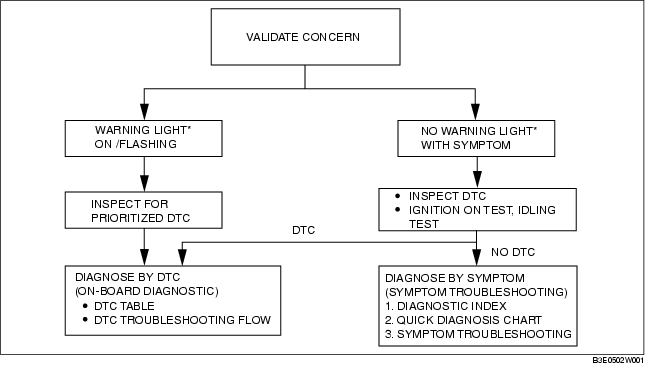

FOREWORD [FN4A-EL]
id0503a1800200
• When the customer reports a vehicle malfunction, check the malfunction indicator lamp (MIL) illuminating, HOLD indicator light*1 flashing, AT warning light*2 illuminating, and diagnostic trouble code (DTC), then diagnose the malfunction according to following flowchart.
-
- If a DTC exists, diagnose the applicable DTC inspection. (See DTC TABLE [FN4A-EL].)
-
- If a DTC does not exist, the MIL does not illuminate, HOLD indicator light*1 flashes, and AT warning light*2 illuminate, diagnose the applicable symptom troubleshooting. (See SYMPTOM TROUBLESHOOTING ITEM TABLE [FN4A-EL].)
(*1: 4AT, *2: SPORT AT)

*: Malfunction Indicator Lamp (MIL), HOLD indicator light (4AT), AT warning light (SPORT AT).